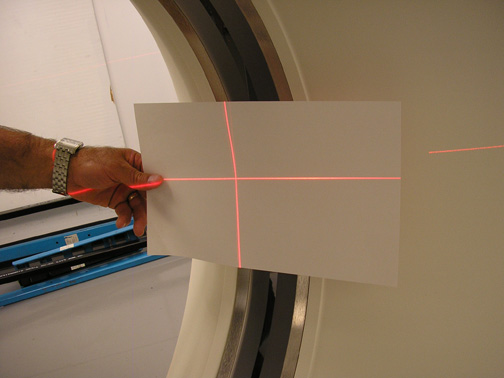
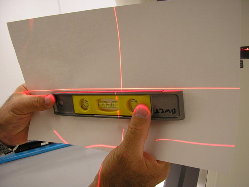

Operating Documentation
Direction 5307452-8EN, Rev# 4
Discovery CT750 HD Service Methods - Adv
Operating Documentation |
| Last Revision | 27 August 2008 |
| POSSIBLE PHYSICAL INJURY | |
| GANTRY MAY ROTATE WHEN ALIGNMENT LIGHTS ARE TURNED ON. | |
| Verify that all personnel are clear of the system, and the Gantry rotates freely to 180 degrees. |
| POSSIBLE EYE INJURY. | |
| LASER BEAMS CAN CAUSE PERMANENT EYE DAMAGE. | |
| When operating the alignment lights, do not stare at the laser beams. |
Adjust the room illumination to normal ambient customer working conditions.
Turn on the Laser Alignment Lights. (Press the Alignment Light button on the gantry control panel.)
Ensure all laser alignment lights are visible in the customer's ambient lighting conditions.
Place a sheet of plain white paper over the output port of each light.
Verify that the two laser lines coincide with each other and appear as a single line.
| NOTE: | GE designed the internal axial lasers on the current CT system to shine down on the collimator. Do NOT adjust the internal alignment lights at this time. |
| NOTE: | Ensure that the cradle is level. |
Raise the table to its highest elevation.
Extend the cradle until both the internal and external laser lights shine on the cradle.
Place a metric rule on the right edge of the cradle, and measure the distance from the internal axial laser line to the external axial line. Verify this distance equals 240.0 mm ±1.0 mm.
Place the rule on the left edge of the cradle and measure again.
Leave the cradle in its current position and lower the table to the minimum elevation.
Measure the distance between the internal and external lights on both edges of the cradle, as above.
Verify that the distance between the internal and external lights remains equal to 240.0 mm ±1.0 mm.
Place a sheet of plain white paper at the left side of the patient opening, in front of the coronal laser light.
Verify that the two coronal lines coincide (see Illustration 1).
Move the paper to the right side of the patient opening.
Verify that the two coronal lines coincide (see Illustration 1).
Illustration 1: Laser Coronal Lines Coincide

Place the paper in the center of the gantry opening.
Use a level to verify that the coronal lines are horizontal (see Illustration 2).
Illustration 2: Verify Coronal Lines are Horizontal

Turn the Lights OFF. (Press the alignment light button on the gantry control panel, again, to turn the lights OFF.)
| NOTE: | If any of the above tests fails, complete an Alignment Light Adjustment. (For procedures, see Alignment Light Adjustment.) |